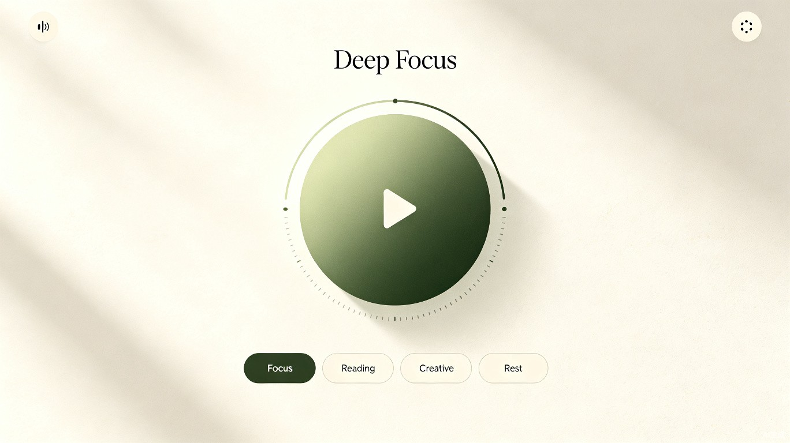

FocusFlow 专注流
一款基于工作状态自动匹配纯音乐背景音的学习注意力音乐软件

一、文档概述
1.1 产品背景
在学习、写作、编程等需要长时间专注的场景中，背景音被研究证明可以帮助部分用户进入心流状态、降低环境噪音干扰。市面上的白噪音或 Lo-Fi 产品往往存在 曲库冗杂、界面复杂、广告打断 等问题。FocusFlow 希望做一款极简、无打扰、以状态驱动的纯音乐背景音工具。
1.2 产品目标
- 让用户在 3 秒内 进入适合当前任务的背景音乐氛围。
- 通过「工作状态 → 音乐场景」的映射，降低用户选择成本。
- 保持界面极简、视觉克制，不分散用户注意力。
1.3 文档范围
本文档覆盖 FocusFlow 移动端 App（iOS / Android）与桌面端（Web / 小程序）MVP 版本的产品需求，包含核心功能、信息架构、界面原则、非功能需求及数据埋点。
二、目标用户与场景
2.1 目标用户
主要用户：学生与知识工作者
18-35 岁，需要长时间进行阅读、写作、备考、编程、设计等深度工作的人群。他们对效率工具有一定认知，愿意为专注力付费或忍受轻度订阅。
次要用户：轻量冥想/休息人群
需要短暂放松、午休、睡前舒缓的用户。他们对音乐情绪敏感，偏好无歌词、无强烈节奏变化的纯音乐。
2.2 核心使用场景
| 场景 | 用户状态 | 音乐需求 | 期望结果 |
|---|---|---|---|
| 备考刷题 | 高强度专注，易被干扰 | 低动态、无歌词、重复性强的氛围音乐 | 快速进入心流，减少分心 |
| 阅读文献 | 中等专注，需要理解力 | 舒缓钢琴/弦乐，不抢认知资源 | 延长连续阅读时间 |
| 创意写作/设计 | 发散思维，需要灵感 | 节奏感稍强、情绪上扬的轻音乐 | 维持创作情绪，避免倦怠 |
| 短暂休息 | 疲劳，需要恢复 | 自然音+柔和旋律，引导放松 | 5-10 分钟快速恢复精力 |
三、产品定位与价值主张
3.1 一句话定位
FocusFlow 是一款根据你的当前任务状态，自动播放最合适纯音乐背景音的专注伴侣。
3.2 核心价值
- 状态即播放：不需要在海量歌单中翻找，选择一个工作状态即可开始。
- 零认知负担：无歌词、无社交、无复杂推荐，打开即用。
- 视觉极简：界面只保留播放控制与状态切换，不抢占注意力。
3.3 差异化优势
| 竞品类型 | 典型问题 | FocusFlow 的差异 |
|---|---|---|
| 音乐流媒体（Spotify/网易云） | 选择多、易分心、有歌词和广告 | 纯音乐、场景驱动、无推荐信息流 |
| 白噪音 App | 多为合成音效，长期使用单调 | 以原创/授权纯音乐为主，情绪更丰富 |
| 番茄钟/效率工具 | 功能重、学习成本高 | 只做一件事：用音乐帮你进入状态 |
四、功能需求
4.1 功能总览
FocusFlow 的功能架构遵循 「一个核心 + 四个辅助」 原则：
- 核心：状态驱动的音乐播放
- 辅助：播放控制、计时器、音量/混音、个人统计
4.2 状态模式映射（核心功能）
用户在首页选择一个工作状态，系统自动切换到对应的音乐场景。每个场景包含若干首纯音乐循环播放，避免用户手动切歌。
| 状态模式 | 适合任务 | 音乐特征 | 节奏/情绪 |
|---|---|---|---|
| 深度专注 | 编程、数学、背诵、刷题 | 极简钢琴/合成器氛围，无歌词，低动态 | 60-80 BPM，稳定、克制 |
| 阅读学习 | 读论文、看课件、复习笔记 | 舒缓钢琴、弦乐、轻吉他 | 70-90 BPM，柔和、清晰 |
| 创意工作 | 写作、设计、头脑风暴 | 轻电子、爵士钢琴、世界音乐元素 | 90-110 BPM，流动、启发 |
| 放松休息 | 午休、冥想、睡前 | 自然氛围、柔和铺底、慢速旋律 | 50-70 BPM，缓慢、松弛 |
4.3 AI 云生成音乐播放
FocusFlow 不依赖固定曲库，而是根据当前状态模式调用云端 AI 音乐生成 API，实时生成与状态匹配的纯音乐。系统为每个状态维护一组提示词模板，生成时随机组合元素，确保每次播放都有新鲜感。
- 状态驱动生成：每个模式对应一组结构化提示词（风格、情绪、节奏、乐器），调用 Suno / Stable Audio 等文本转音乐 API 生成无歌词纯音乐。
- 随机组合：在同一模式下，系统从提示词池中随机抽取 3-5 个关键词组合，生成不同变体，避免重复。
- 预置曲目：每个状态预置 3-5 首已生成的热门曲目，在 API 生成中或弱网时兜底播放。
- 本地缓存：最近播放的 5-8 首生成结果自动缓存，支持离线回播；缓存策略为 LRU。
- 智能淡入淡出：切换场景或暂停时，音量在 1-2 秒内平滑过渡。
- 生成状态可视：首次进入状态或点击「换一首」时，界面显示 AI 生成进度与当前提示词，降低等待焦虑。
4.4 计时器
- 提供 15 / 25 / 45 / 60 分钟预设，以及自定义时长。
- 计时结束时以柔和音效提示，不弹窗打断。
- 计时进度以环形可视化呈现，与播放按钮融合。
4.5 播放控制
- 播放 / 暂停：大圆形中央按钮，点击即可切换。
- 音量调节：滑块，默认 70%。
- 下一首：同一模式下随机切换曲目，手势左滑触发。
- 勿扰模式：播放时隐藏通知预览，保持屏幕常亮（可选）。
4.6 个人统计
- 展示今日/本周/本月的专注时长与使用场景分布。
- 以简洁数据卡片呈现，不引入排行榜或社交比较。
五、信息架构与界面设计
5.1 信息架构
flowchart TD
A[启动页 / Splash] --> B[首页播放界面]
B --> C[状态选择区]
B --> D[播放控制区]
B --> E[计时器]
B --> F[设置]
F --> G[音量/混音]
F --> H[通知/屏幕常亮]
F --> I[账户/订阅]
B --> J[统计页]
5.2 界面原则
克制用色
主界面以米白/浅灰为底，强调色仅使用森林绿系。避免高饱和、闪烁或动效干扰。
大触控区
播放按钮与模式标签尺寸足够大，支持盲操作。用户无需看屏幕即可暂停/继续。
一页即全部
核心功能集中在首页完成。统计与设置通过底部或顶部轻量入口进入，不破坏主流程。
状态可视化
当前模式以高亮标签呈现，计时进度通过播放按钮外环展示，信息层级清晰。
5.3 关键界面说明
首页
- 顶部：品牌 Logo、音量图标、设置入口。
- 中部：大圆形播放按钮，外环显示计时进度；当前模式名称显示在圆环上方。
- 底部：四个状态模式标签，当前选中项以填充色高亮。
设置页
- AI 音乐生成开关：允许在「实时生成」与「仅使用预置曲」之间切换。
- 音质选择（标准 / 高质，默认标准以节省流量与生成成本）。
- 缓存管理：查看已缓存曲目数量与一键清除。
- 通知勿扰 / 屏幕常亮开关。
- 账户与订阅入口。
统计页
- 顶部展示本周总专注时长。
- 中部以横向条形图展示各场景使用占比。
- 底部展示连续专注天数（ streak ），用于轻量激励。
六、非功能需求
| 维度 | 需求描述 | 验收标准 |
|---|---|---|
| 性能 | 启动后 2 秒内可播放音乐 | 冷启动到首帧音频播放 ≤ 2s（Wi-Fi 环境） |
| 稳定性 | 长时间播放不卡顿、不闪退 | 连续播放 2 小时无异常中断 |
| 音质 | 提供标准与高质两档 | 标准 128kbps，高质 256kbps AAC |
| 省电 | 后台播放功耗可控 | 后台播放 1 小时耗电 ≤ 同类音乐 App 平均水平 |
| 无障碍 | 支持基础屏幕阅读器标签 | 播放按钮、模式标签具备可读语义 |
| 隐私 | 不采集敏感行为数据 | 仅收集匿名化播放时长与场景选择数据 |
七、数据埋点
为验证产品假设并指导迭代，MVP 阶段需采集以下事件：
| 事件名 | 触发时机 | 用途 |
|---|---|---|
app_launch |
应用启动 | 统计活跃用户数 |
mode_select |
切换状态模式 | 分析各场景受欢迎程度 |
play_start |
点击播放 | 计算播放转化率 |
play_end |
暂停/计时结束/退出 | 计算单次专注时长 |
timer_set |
设置计时器 | 了解用户使用习惯 |
setting_change |
修改设置项 | 优化默认配置 |
八、MVP 范围与迭代计划
8.1 MVP 必须包含
- 4 种状态模式（深度专注、阅读学习、创意工作、放松休息）。
- 每个模式 3-5 首可循环纯音乐。
- 首页播放控制与计时器。
- 基础设置：音量、白噪音混音、勿扰模式。
- 个人统计页。
8.2 后续迭代
| 版本 | 功能 | 目标 |
|---|---|---|
| v1.1 | 自定义场景、收藏曲目 | 提升个性化体验 |
| v1.2 | 订阅会员、高品质音频、更多曲库 | 建立商业模式 |
| v2.0 | 小组件 / 快捷指令、跨设备同步 | 融入用户工作流 |
九、风险与假设
| 风险/假设 | 说明 | 应对策略 |
|---|---|---|
| 音乐版权 | 纯音乐曲库需要授权或原创 | MVP 优先使用原创/免版税音乐，后续引入授权曲库 |
| 用户习惯差异 | 部分用户习惯完全安静，不接受背景音 | onboarding 提供试听引导，强调「可关闭」 |
| 同质化竞争 | 白噪音与 Lo-Fi 产品众多 | 以「状态驱动 + 极简交互」形成差异化记忆点 |
| 变现路径 | 用户付费意愿未知 | 基础功能免费，高级曲库与音质通过订阅解锁 |
十、术语表
- 状态模式：用户当前工作或休息状态的分类，每个模式对应一类音乐特征。
- 白噪音混音：在纯音乐之上叠加自然或环境音效，增强沉浸感。
- 无缝循环：音乐曲目首尾平滑衔接，避免播放间隙打断专注。